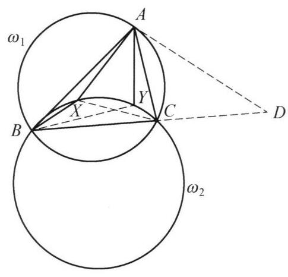

91 例 6：动点切线与定点定直线根轴
91.1 题目
在锐角三角形 {ABC} 中，点 X, Y 是三角形 {ABC} 内部的两个互异的动点，且满足 B, C, X, Y 四点共圆及 \angle {AXB} - \angle {ACB} = \angle {AYC} - \angle {ABC} . 证明: 直线 {XY} 经过一个定点.

图 6-7
91.2 参考解答
如图 6-7，设过点 A 的 \triangle {ABC} 的外接圆的切线与 {BC} 的延长线交于点 D .
设三角形 {AXY} 的外接圆为 \omega ，三角形 {ABC} 的外接圆为 {\omega }_1,{BCXY} 的外接圆为 {\omega }_2 .
由 \angle {AXB} - \angle {ACB} = \angle {AYC} - \angle {ABC} 得
{360}^{ \circ } - \angle {AXC} - \angle {CXB} - \angle {ACX} - \angle {BCX}
= {360}^{ \circ } - \angle {AYB} - \angle {CYB} - \angle {ABY} - \angle {CBY}\text{ , }
即
{360}^{ \circ } - \left( {{180}^{ \circ } - \angle {XAC}}\right) - \left( {{180}^{ \circ } - \angle {XBC}}\right)
= {360}^{ \circ } - \left( {{180}^{ \circ } - \angle {BAY}}\right) - \left( {{180}^{ \circ } - \angle {BCY}}\right) .
所以
\angle {CAX} + \angle {CBX} = \angle {BAY} + \angle {BCY}.
\angle {YAD} = \angle {BAD} - \angle {BAY}
= \angle {ACD} - \left( {\angle {CAX} + \angle {CBX} - \angle {BCY}}\right)
= \angle {ABC} + \angle {BAC} - \angle {CAX} - \angle {CBX} + \angle {BCY}
= \angle {ABX} + \angle {BAX} + \left( {{180}^{ \circ } - \angle {BXY}}\right)
= \angle {AXY}\text{ . }
所以 {AD} 是三角形 {AXY} 的外接圆 \omega 的切线. 于是直线 {AD} 是 {\omega }_1 与 \omega 的根轴. 又因为直线 {XY} 是 \omega ,{\omega }_2 的根轴,直线 {BC} 是 {\omega }_1,{\omega }_2 的根轴,则由根心定理,知 {AD} , {XY},{BC} 三线共点,即直线 {XY} 过点 D . 原问题得证.
注: 取 X = C, Y = B 可猜出 D 在 {BC} 上,导角得圆 {ABC} 与圆 {AXY} 相切,再利用根心定理知结论成立.
91.3 解题思路与分析
这个证明之所以让人觉得“费解”，是因为教材采用了“综合法（从已知直接推向结论）”的书写方式，把探路的过程、极具直观意义的几何模型（如凹四边形性质）以及关键的代换桥梁全部隐藏或改写成了纯粹的代数角运算。
如果我们将这个证明按“解题者的真实思维过程（逆向分析法）”拆解开来，你会发现每一步都是顺理成章、甚至可以说是唯一自然的。我们可以分四个阶段来还原它是怎么被想出来的：
91.3.1 第一阶段：如何未卜先知地“猜”出定点 D？（极限/退化探路法）
题目要求证明直线 XY 过一个定点，但既没给出定点的位置，也没给出任何与定点相关的线段。在竞赛几何中，面对“求证动直线过定点”的问题，第一步永远是通过极端情况（退化位置）把定点找出来。
我们考察已知条件：B, C, X, Y 四点共圆，且 \angle AXB - \angle ACB = \angle AYC - \angle ABC。 1. 第一次退化（如书中“注”所言）： 既然 X, Y 是满足条件的动点，不妨让 X 无限趋近于 C，同时让 Y 无限趋近于 B。此时： \angle AXB \to \angle ACB, \quad \angle AYC \to \angle ABC 原等式变成 0 = 0，完全成立！而此时直线 XY 退化成了直线 BC。这说明：如果直线 XY 恒过某一定点，该定点必然在直线 BC 上！ 2. 第二次退化（锁定 BC 上的具体位置）： 如果我们让过 B, C, X, Y 的圆 \omega_2 逐渐扩大，无限逼近 \triangle ABC 的外接圆 \omega_1，同时让点 X 和点 Y 在 \triangle ABC 内部同时无限趋近于顶点 A。 * 此时，\angle AXB 和 \angle AYC 的极限行为是对称的，等式在极限意义下依然能够维持平衡； * 当圆上的两个动点 X, Y 同时趋近于顶点 A 时，割线 XY 的极限位置就是圆 \omega_1 = (ABC) 在点 A 处的切线！
结合这两次退化，动直线 XY 的极限位置既是直线 BC，又是点 A 处的外接圆切线。因此，这个定点只能是过点 A 的 \triangle ABC 外接圆切线与直线 BC 的交点 D！这就是证明第一句话“设过点 A 的切线与 BC 延长线交于点 D”的由来。
91.3.2 第二阶段：为什么凭空引入 \triangle AXY 的外接圆 \omega？（根心定理的召唤）
一旦锁定了定点 D，我们的目标就变成了证明：直线 XY、直线 BC、以及圆 \omega_1=(ABC) 在点 A 处的切线 AD 三线共点。
观察现有的几何结构： * 我们已经有两个圆：\omega_1 = (ABC) 和 \omega_2 = (BCXY)； * 直线 BC 恰好是 \omega_1 和 \omega_2 的公共弦，即根轴； * 直线 XY 是圆 \omega_2 的一条弦； * 直线 AD 是圆 \omega_1 在点 A 处的切线。
在平面几何中，证明“两圆的公共弦（根轴）”与其他直线共点，最核心的工具就是根心定理（三个圆两两的根轴交于一点）。为了凑齐三个圆： 1. 我们需要第三个圆 \omega，使得直线 XY 成为 \omega 与 \omega_2 的根轴——这意味着圆 \omega 必须经过点 X, Y； 2. 同时，我们需要切线 AD 成为 \omega 与 \omega_1 的根轴——既然 AD 已经与 \omega_1 相切于点 A，那么只需圆 \omega 也经过点 A，且在点 A 处与直线 AD 相切（此时两圆在 A 点相切，公切线 AD 就是它们的根轴）！
过 A, X, Y 三点的圆是唯一确定的，即 \triangle AXY 的外接圆 \omega。于是，整道题的证明被完美地转化为一个纯粹的导角目标： > 证明直线 AD 是 \triangle AXY 外接圆 \omega 的切线。由弦切角定理的逆定理，这等价于证明：\angle YAD = \angle AXY。
91.3.3 第三阶段：破译“天书般”的 360^\circ 导角（被隐藏的“飞镖模型”）
证明中最让人摸不着头脑的，莫过于把 \angle AXB - \angle ACB 突然写成： 360^\circ - \angle AXC - \angle CXB - \angle ACX - \angle BCX 为什么要这么做？其实这里隐藏着一个极其简单的初等几何基本图形——凹四边形（俗称“飞镖模型”）。
直观的几何模型： 因为点 X 在 \triangle ABC 内部，连接 CA, CB, XA, XB，这四条线段构成了一个凹四边形 ACBX（凹顶点为 X）。 在初中几何中，凹四边形有一个非常著名的性质（可由连接 CX 并延长，利用两次三角形外角定理直接得出）： \angle AXB = \angle ACB + \angle CAX + \angle CBX 移项即得： \angle AXB - \angle ACB = \angle CAX + \angle CBX 同理，对于凹四边形 ABYC（凹顶点为 Y），立刻有： \angle AYC - \angle ABC = \angle BAY + \angle BCY 将这两式代入题目条件 \angle AXB - \angle ACB = \angle AYC - \angle ABC，一秒钟就能得出核心中间结论： \angle CAX + \angle CBX = \angle BAY + \angle BCY
为什么教材要写 360^\circ？ 教材为了不添加“延长 CX 交 AB 于某点”这样的辅助线描述，直接用代数方式重证了一遍凹四边形性质：
- 绕内点 X 一周的周角为 360^\circ，所以 \angle AXB = 360^\circ - \angle AXC - \angle CXB；
- 顶点 C 的角拆分为 \angle ACB = \angle ACX + \angle BCX；
- 两式相减，把 360^\circ 拆成两个 180^\circ，分别放进 \triangle AXC 和 \triangle BXC 中使用内角和定理： \angle AXB - \angle ACB = (180^\circ - \angle AXC - \angle ACX) + (180^\circ - \angle CXB - \angle BCX) = \angle CAX + \angle CBX 这种写法在逻辑上极其紧凑，但掩盖了“把张角 \angle AXB 与顶角 \angle ACB 之差转化为另外两个侧角之和”的几何直觉。
91.3.4 第四阶段：最后一步的“神仙凑角”是如何打通的？
有了核心等式 \angle CAX + \angle CBX = \angle BAY + \angle BCY，现在的任务是计算 \angle YAD，并把它变成 \angle AXY。我们来看看这里的消元逻辑（以及书中一处跳步的细节）：
消去点 Y 附近的角，向点 X 集中： 我们要算 \angle YAD = \angle BAD - \angle BAY，而目标 \angle AXY 主要是关于点 X 的角。因此，自然想到利用刚才的等式，把与 Y 有关的 \angle BAY 替换掉： \angle BAY = \angle CAX + \angle CBX - \angle BCY
书中隐蔽的跳步：为什么 \angle BAD 突然变成了 \angle ACD？ 注意书中写道： \angle YAD = \angle BAD - \angle BAY = \angle ACD - (\angle CAX + \angle CBX - \angle BCY) 很多读者卡在这里：为什么 \angle BAD = \angle ACD？
- 因为 AD 是圆 \omega_1=(ABC) 的切线，由弦切角定理知 \angle CAD = \angle ABC；
- 于是 \angle BAD = \angle BAC + \angle CAD = \angle BAC + \angle ABC；
- 而在 \triangle ABC 中，点 D 在 BC 的延长线上，所以外角 \angle ACD 恰好也等于 \angle BAC + \angle ABC！ 其实，\angle ACD 只是一个过渡记号，它的真正目的是把 \angle BAD 拆成 \triangle ABC 的两个内角 \angle ABC + \angle BAC。
- 顺理成章的合并与收尾： 把 \angle BAD = \angle ABC + \angle BAC 代入后，式子变成了： \angle YAD = (\angle BAC - \angle CAX) + (\angle ABC - \angle CBX) + \angle BCY 看前两项，在图形中就是两个角的直接相减：
- \angle BAC - \angle CAX = \angle BAX
- \angle ABC - \angle CBX = \angle ABX
看第三项 \angle BCY：此时我们还有一个关键条件“B, C, X, Y 四点共圆”没有用！在圆内接四边形 BCYX 中，对角互补，所以： * \angle BCY = 180^\circ - \angle BXY
将这三部分合起来，最后再用一次 \triangle ABX 的内角和与绕点 X 的周角 360^\circ： \begin{aligned} \angle YAD &= (\angle BAX + \angle ABX) + (180^\circ - \angle BXY) \\ &= (180^\circ - \angle AXB) + (180^\circ - \angle BXY) \\ &= 360^\circ - (\angle AXB + \angle BXY) \\ &= \angle AXY \end{aligned}
91.3.5 总结：整道题的思维链条图
把上面的分析串联起来，这道题的完整思考路径其实是这样的：
\text{极限探路猜出定点 } D \xrightarrow{\text{三线共点联想}} \text{构造辅助圆 }\omega=(AXY)\text{ 用根心定理} \xrightarrow{\text{等价转化}} \text{需证弦切角 }\angle YAD = \angle AXY \xrightarrow{\text{飞镖模型化简条件}} \text{得出 }\angle CAX + \angle CBX = \angle BAY + \angle BCY \xrightarrow{\text{消去 }\angle BAY\text{ 并结合四点共圆}} \text{导角得证}
只要看穿了“逆向用根心定理定目标”和“正向用飞镖模型化简条件”这两头，中间的导角就完全是顺水推舟的恒等变形了。
91.4 分步证明
91.4.1 步骤 0：已知条件与几何命题
在锐角 \triangle ABC 中，点 X, Y 是内部的两个互异动点，满足： 1. B, C, X, Y 四点共圆（记此圆为 \omega_2）； 2. \angle AXB - \angle ACB = \angle AYC - \angle ABC。 求证：无论动点 X, Y 如何运动，直线 XY 必恒经过一个只与 \triangle ABC 相关的定点。
91.4.2 步骤 1：① 构造定点 D 与外接圆 ω₁
设 \triangle ABC 的外接圆为 \omega_1。过顶点 A 作 \omega_1 的切线，与边 BC 的延长线交于点 D。 定点确定：由于锐角 \triangle ABC 是固定的，外接圆 \omega_1、切线 AD 以及与直线 BC 的交点 D 均唯一确定，与动点 X, Y 无关。 由切割线定理，切线长满足：DA^2 = DB \cdot DC。
91.4.3 步骤 2：② 周角拆解转化角差条件
围绕内部动点 X，利用平面周角 360^\circ 与三角形内角和性质： \angle AXB = 360^\circ - \angle AXC - \angle CXB \angle ACB = \angle ACX + \angle BCX 在 \triangle ACX 与 \triangle BCX 中利用内角和 180^\circ 相消得： \angle AXB - \angle ACB = \angle CAX + \angle CBX。 同理可得：\angle AYC - \angle ABC = \angle BAY + \angle BCY。 代入已知角差相等条件，即得关键对称等式： \angle CAX + \angle CBX = \angle BAY + \angle BCY。
91.4.4 步骤 3：③ 弦切角与圆内接四边形导角
由 AD 切 \omega_1 于 A，弦切角 \angle CAD = \angle ABC，故外角 \angle BAD = \angle ABC + \angle BAC。 计算角 \angle YAD： \angle YAD = \angle BAD - \angle BAY = \angle ABC + \angle BAC - (\angle CAX + \angle CBX - \angle BCY) = (\angle ABC - \angle CBX) + (\angle BAC - \angle CAX) + \angle BCY = \angle ABX + \angle BAX + \angle BCY。 因 B,C,X,Y 共圆，圆内接四边形对角互补：\angle BCY = 180^\circ - \angle BXY。 代入 \triangle ABX 内角和：\angle YAD = (180^\circ - \angle AXB) + (180^\circ - \angle BXY) = \mathbf{\angle AXY}！
91.4.5 步骤 4：④ 判定 AD 是 ω(AXY) 的切线
在 \triangle AXY 中，射线 AD 与弦 AY 所夹的角满足： \angle YAD = \angle AXY。 由弦切角定理的逆定理：直线 AD 必为 \triangle AXY 外接圆 \omega 在点 A 处的切线！ 因此，圆 \omega 与圆 \omega_1 在点 A 处内切，直线 AD 为圆 \omega 与圆 \omega_1 的公共切线（即两圆的根轴）。
91.4.6 步骤 5：⑤ 应用三圆根心定理得出结论
考察三个圆及其两两之间的根轴： 1. \omega 与 \omega_1 在 A 处内切 \implies 公共切线 AD 为其根轴； 2. \omega_1 与 \omega_2 相交于 B, C \implies 直线 BC 为其根轴； 3. \omega 与 \omega_2 相交于 X, Y \implies 直线 XY 为其根轴。 由根心定理（三圆根轴定理）：三圆的两两根轴若不平行，必汇交于同一点（根心）。 已知根轴 AD 与根轴 BC 显然相交于定点 D，故第三条根轴 直线 XY 必经过定点 D！命题得证。